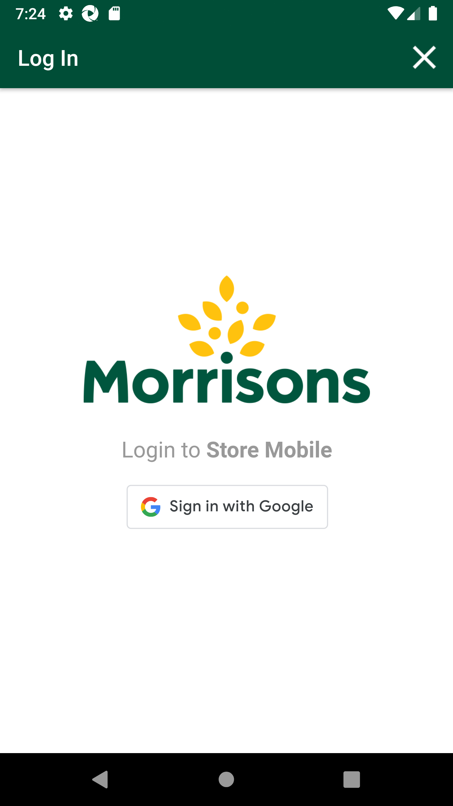
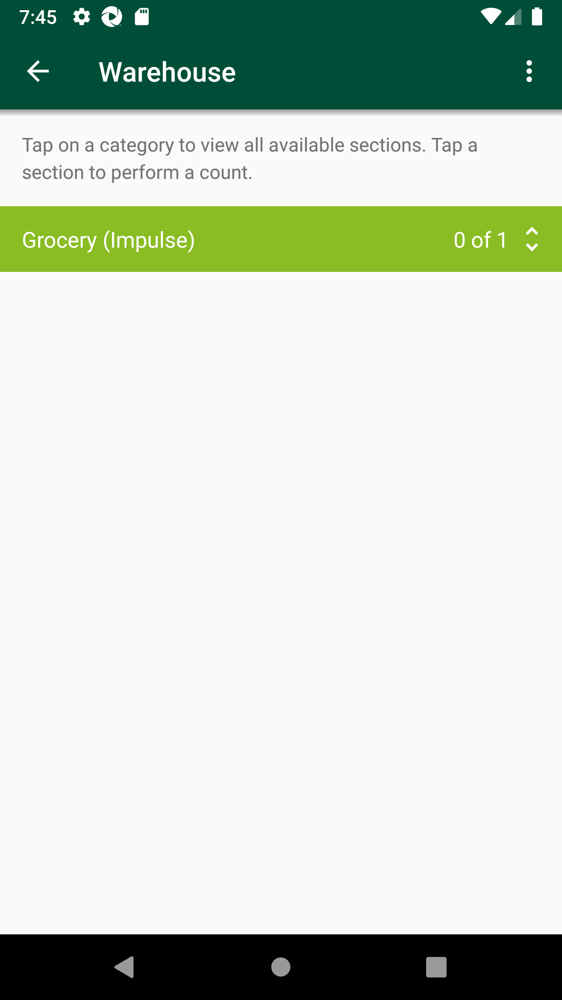
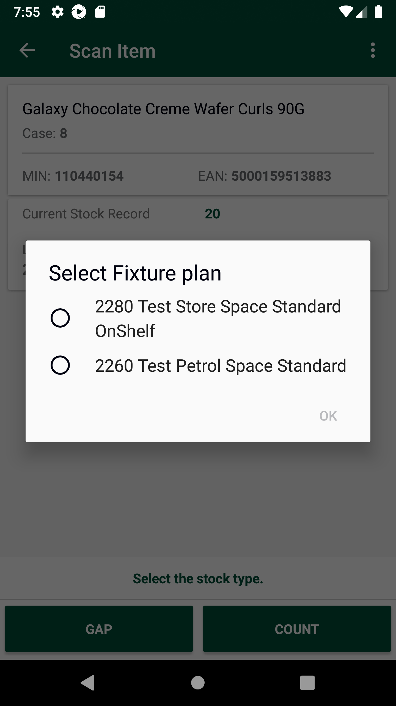
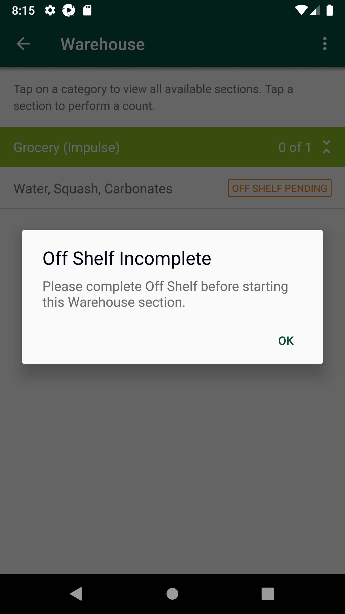
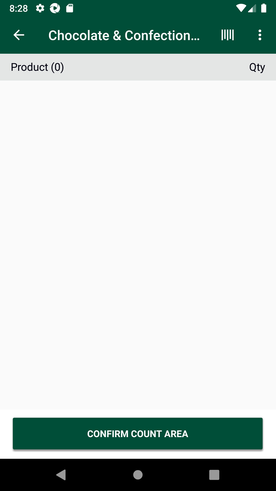
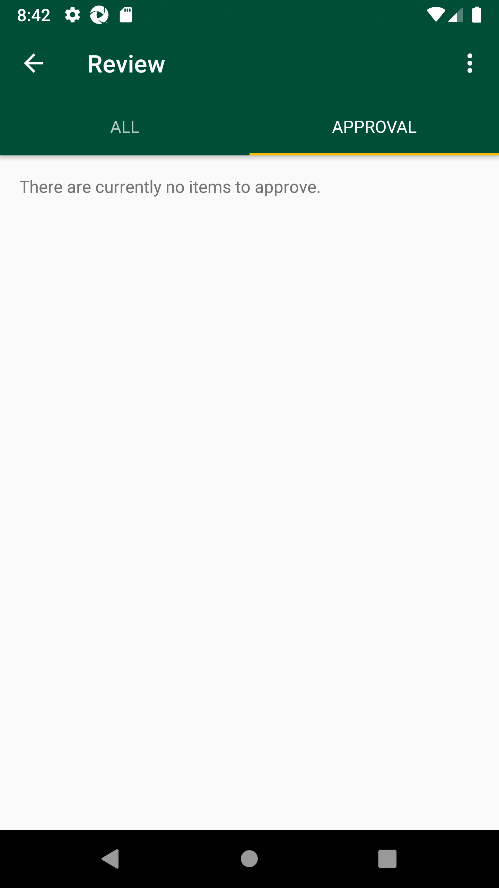

-
GlhBurst functionality
5:53:56 PM / 01:44:01:680 Fail
GlhBurst functionality
02.27.2024 5:53:56 PM 02.27.2024 7:37:58 PM 01:44:01:680 · #test-id=1@Newglh_burst_701PassTO CHANGE THE DEVICE TIMINGS AS REQUIREDPassTO CHANGE THE DEVICE TIMINGS AS REQUIREDGiven I send the time "07" and mins "00" and meridiem "am" and current date in listThen I Change timeThen I Change datePassDelete GLH Storewalk from ServicePassDelete GLH Storewalk from ServiceGiven request is made to capture access token and post endpoint for user v2 for "" Then I Verify the Response Code for the following "- " is 200
And I get the field value for the field "access_token"And Get the generated Access Tocken for SMA app Login ServiceGiven Get request is made to Get storewalks service for current dateAnd Get Operation perform on service requestThen Verify Get storewalks service response for current dateThen Delete request is made to Delete GLH storewalk for store id "8"PassDelete GLH Storewalk from ServiceAnd Get the generated Access Tocken for SMA app Login ServiceGiven Get request is made to Get storewalks service for current dateAnd Get Operation perform on service requestThen Verify Get storewalks service response for current dateThen Delete request is made to Delete GLH storewalk for store id "8"FailScan products in fixture and marked as GAP and COUNT.FailScan products in fixture and marked as GAP and COUNT.When I enter Username and Password for SMA Collegue userAnd I click on login button for SMAThen I click on 'stockMngmtText' on page 'HomePagePO_New'Then I click on "Shop Floor - Gap Scan"Then I click on Fixture ScanAnd I click on barcode entry ButtonThen Enter "107514491" numberAnd I click on GAP buttonAnd I will capture the product name from view listAnd I click on barcode entry Buttoncom.morrisons.common.action.Hook.afterScenario(io.cucumber.java.Scenario)Then Enter "109154185" numberStep skippedAnd I click on COUNT buttonStep skippedAnd I enter quantity "2" for fixture and warehouseStep skippedAnd I choose the plan from popup if multiple records presentStep skippedAnd I will capture the product name from view listStep skippedAnd I click on barcode entry ButtonStep skippedThen Enter "100162509" numberStep skippedAnd I click on dynamic "sLocatorName" "COUNT" on page 'GapsLowsHighsPO'Step skippedAnd I enter quantity "2" for fixture and warehouseStep skippedAnd I choose the plan from popup if multiple records presentStep skippedAnd I will capture the product name from view listStep skippedAnd I click on Back ButtonStep skippedPassSMA-20454_To verify Get storewalk API response is correct when sent without attributes.PassSMA-20454_To verify Get storewalk API response is correct when sent without attributes.And Get the generated Access Tocken for SMA app Login ServiceGiven Post request is made to Create storewalk service for store id "8" and type "GapsHighsLows"And Post Operation perform on service requestThen Verify Create storewalk service responseAnd Get request is made to Get storewalk service for store id "8"Then Get Operation perform on service requestThen Verify Get storewalk service responseThen I verify storewalk responsePassSMA-20454_To verify Get storewalk API response is correct when sent with attributes.PassSMA-20454_To verify Get storewalk API response is correct when sent with attributes.And Get the generated Access Tocken for SMA app Login ServiceGiven Post request is made to Create storewalk service for store id "8" and type "GapsHighsLows"And Post Operation perform on service requestThen Verify Create storewalk service responseAnd Get request is made to Get storewalk service for store id "8" and attributesThen Get Operation perform on service requestThen Verify Get storewalk service responseThen I verify storewalk responsePassSMA-20454_To verify as per below mentioned values in new attribute Capturetype['High'] are excluded from the Get Storewalk API response.Capturetype[ne]=['High']PassSMA-20454_To verify as per below mentioned values in new attribute Capturetype['High'] are excluded from the Get Storewalk API response.Capturetype[ne]=['High']And Get the generated Access Tocken for SMA app Login ServiceGiven Post request is made to Create storewalk service for store id "8" and type "GapsHighsLows"And Post Operation perform on service requestThen Verify Create storewalk service responseAnd Get request is made to Get storewalk service for store id "8" and capture type "High"Then Get Operation perform on service requestThen Verify Get storewalk service responseAnd I verify Capturetype attribute is excluded from the Get Storewalk API responsePassSMA-20454_To verify as per below mentioned values in new attribute Capturetype['Low'] are excluded from the Get Storewalk API response.Capturetype[ne]=['Low']PassSMA-20454_To verify as per below mentioned values in new attribute Capturetype['Low'] are excluded from the Get Storewalk API response.Capturetype[ne]=['Low']And Get the generated Access Tocken for SMA app Login ServiceGiven Post request is made to Create storewalk service for store id "8" and type "GapsHighsLows"And Post Operation perform on service requestThen Verify Create storewalk service responseAnd Get request is made to Get storewalk service for store id "8" and capture type "Low"Then Get Operation perform on service requestThen Verify Get storewalk service responseThen I verify storewalk responseAnd I verify Capturetype attribute is excluded from the Get Storewalk API responsePassSMA-20454_To verify as per below mentioned values in new attribute Capturetype['Gap'] are excluded from the Get Storewalk API response.Capturetype[ne]=['Gap']PassSMA-20454_To verify as per below mentioned values in new attribute Capturetype['Gap'] are excluded from the Get Storewalk API response.Capturetype[ne]=['Gap']And Get the generated Access Tocken for SMA app Login ServiceGiven Post request is made to Create storewalk service for store id "8" and type "GapsHighsLows"And Post Operation perform on service requestThen Verify Create storewalk service responseAnd Get request is made to Get storewalk service for store id "8" and capture type "Gap"Then Get Operation perform on service requestThen Verify Get storewalk service responseThen I verify storewalk responseAnd I verify Capturetype attribute is excluded from the Get Storewalk API responsePassSMA-20454_To verify as per below mentioned values in new attribute Capturetype['High','Low'] are excluded from the Get Storewalk API response.Capturetype[ne]=['High','Low']PassSMA-20454_To verify as per below mentioned values in new attribute Capturetype['High','Low'] are excluded from the Get Storewalk API response.Capturetype[ne]=['High','Low']And Get the generated Access Tocken for SMA app Login ServiceGiven Post request is made to Create storewalk service for store id "8" and type "GapsHighsLows"And Post Operation perform on service requestThen Verify Create storewalk service responseAnd Get request is made to Get storewalk service for store id "8" and capture type "High','Low"Then Get Operation perform on service requestThen Verify Get storewalk service responseThen I verify storewalk responseAnd I verify Capturetype attribute is excluded from the Get Storewalk API responsePassSMA-20454_To verify as per below mentioned values in new attribute Capturetype['High','Low','Gap'] are excluded from the Get Storewalk API response.Capturetype[ne]=['High','Low','Gap']PassSMA-20454_To verify as per below mentioned values in new attribute Capturetype['High','Low','Gap'] are excluded from the Get Storewalk API response.Capturetype[ne]=['High','Low','Gap']And Get the generated Access Tocken for SMA app Login ServiceGiven Post request is made to Create storewalk service for store id "8" and type "GapsHighsLows"And Post Operation perform on service requestThen Verify Create storewalk service responseAnd Get request is made to Get storewalk service for store id "8" and capture type "High','Low','Gap"Then Get Operation perform on service requestThen Verify Get storewalk service responseThen I verify storewalk responseAnd I verify Capturetype attribute is excluded from the Get Storewalk API responsePassSMA-20455_To verify Get Section API response is correct after the code change.PassSMA-20455_To verify Get Section API response is correct after the code change.And Get the generated Access Tocken for SMA app Login ServiceGiven Post request is made to Create storewalk service for store id "8" and type "GapsHighsLows"And Post Operation perform on service requestThen Verify Create storewalk service responseGiven Post request is made to Create walkitem service for store id "8" and product id "100001478"And Post Operation perform on service requestThen Verify Create walkitem service responseAnd Get request is made to Get storewalk service for store id "8"Then Get Operation perform on service requestThen Verify Get storewalk service responseAnd Get request is made to Get section service for store id "8"Then Get Operation perform on service requestAnd Verify Get section service responsePassSMA-20455_To verify as per below mentioned values in new attribute Capturetype['High'] are excluded from the Get Section API response.Capturetype[ne]=['High']PassSMA-20455_To verify as per below mentioned values in new attribute Capturetype['High'] are excluded from the Get Section API response.Capturetype[ne]=['High']And Get the generated Access Tocken for SMA app Login ServiceGiven Post request is made to Create storewalk service for store id "8" and type "GapsHighsLows"And Post Operation perform on service requestThen Verify Create storewalk service responseGiven Post request is made to Create walkitem service for store id "8" and product id "100001478"And Post Operation perform on service requestThen Verify Create walkitem service responseGiven Post request is made to Create capture service for store id "8", product id "100001478", location "On_Shelf", value "100", sectionId "0" and capture type "High"And Post Operation perform on service requestThen Verify Create capture service responseAnd Get request is made to Get storewalk service for store id "8"Then Get Operation perform on service requestThen Verify Get storewalk service responseAnd Get request is made to Get section service for store id "8" and capture type "High"Then Get Operation perform on service requestAnd Verify Get section service response with capturesThen I verify Capturetype attribute is excluded from the Get Section API responseGiven Get request is made to Get storewalks service for current dateAnd Get Operation perform on service requestThen Verify Get storewalks service response for current dateThen Delete request is made to Delete GLH storewalk for store id "8"PassSMA-20455_To verify as per below mentioned values in new attribute Capturetype['Low'] are excluded from the Get Section API response.Capturetype[ne]=['Low']PassSMA-20455_To verify as per below mentioned values in new attribute Capturetype['Low'] are excluded from the Get Section API response.Capturetype[ne]=['Low']And Get the generated Access Tocken for SMA app Login ServiceGiven Post request is made to Create storewalk service for store id "8" and type "GapsHighsLows"And Post Operation perform on service requestThen Verify Create storewalk service responseGiven Post request is made to Create walkitem service for store id "8" and product id "100001478"And Post Operation perform on service requestThen Verify Create walkitem service responseGiven Post request is made to Create capture service for store id "8", product id "100001478", location "On_Shelf", value "100", sectionId "0" and capture type "Low"And Post Operation perform on service requestThen Verify Create capture service responseAnd Get request is made to Get storewalk service for store id "8"Then Get Operation perform on service requestThen Verify Get storewalk service responseAnd Get request is made to Get section service for store id "8" and capture type "Low"Then Get Operation perform on service requestAnd Verify Get section service response with capturesThen I verify Capturetype attribute is excluded from the Get Section API responseGiven Get request is made to Get storewalks service for current dateAnd Get Operation perform on service requestThen Verify Get storewalks service response for current dateThen Delete request is made to Delete GLH storewalk for store id "8"PassSMA-20455_To verify as per below mentioned values in new attribute Capturetype['Gap'] are excluded from the Get Section API response.Capturetype[ne]=['Gap']PassSMA-20455_To verify as per below mentioned values in new attribute Capturetype['Gap'] are excluded from the Get Section API response.Capturetype[ne]=['Gap']And Get the generated Access Tocken for SMA app Login ServiceGiven Post request is made to Create storewalk service for store id "8" and type "GapsHighsLows"And Post Operation perform on service requestThen Verify Create storewalk service responseGiven Post request is made to Create walkitem service for store id "8" and product id "100001478"And Post Operation perform on service requestThen Verify Create walkitem service responseGiven Post request is made to Create capture service for store id "8", product id "100001478", location "On_Shelf", value "100", sectionId "0" and capture type "Gap"And Post Operation perform on service requestThen Verify Create capture service responseAnd Get request is made to Get storewalk service for store id "8"Then Get Operation perform on service requestThen Verify Get storewalk service responseAnd Get request is made to Get section service for store id "8" and capture type "Gap"Then Get Operation perform on service requestAnd Verify Get section service response with capturesThen I verify Capturetype attribute is excluded from the Get Section API responseGiven Get request is made to Get storewalks service for current dateAnd Get Operation perform on service requestThen Verify Get storewalks service response for current dateThen Delete request is made to Delete GLH storewalk for store id "8"PassSMA-20455_To verify as per below mentioned values in new attribute Capturetype['High','Low'] are excluded from the Get Section API response.Capturetype[ne]=['High','Low']PassSMA-20455_To verify as per below mentioned values in new attribute Capturetype['High','Low'] are excluded from the Get Section API response.Capturetype[ne]=['High','Low']And Get the generated Access Tocken for SMA app Login ServiceGiven Post request is made to Create storewalk service for store id "8" and type "GapsHighsLows"And Post Operation perform on service requestThen Verify Create storewalk service responseGiven Post request is made to Create walkitem service for store id "8" and product id "100001478"And Post Operation perform on service requestThen Verify Create walkitem service responseGiven Post request is made to Create capture service for store id "8", product id "100001478", location "On_Shelf", value "100", sectionId "0" and capture type "High"And Post Operation perform on service requestThen Verify Create capture service responseGiven Post request is made to Create capture service for store id "8", product id "100001478", location "On_Shelf", value "100", sectionId "0" and capture type "Low"And Post Operation perform on service requestThen Verify Create capture service responseAnd Get request is made to Get storewalk service for store id "8"Then Get Operation perform on service requestThen Verify Get storewalk service responseAnd Get request is made to Get section service for store id "8" and capture type "High','Low"Then Get Operation perform on service requestAnd Verify Get section service response with capturesThen I verify Capturetype attribute is excluded from the Get Section API responseGiven Get request is made to Get storewalks service for current dateAnd Get Operation perform on service requestThen Verify Get storewalks service response for current dateThen Delete request is made to Delete GLH storewalk for store id "8"PassSMA-20455_To verify as per below mentioned values in new attribute Capturetype['High','Low','Gap'] are excluded from the Get Section API response.Capturetype[ne]=['High','Low','Gap']PassSMA-20455_To verify as per below mentioned values in new attribute Capturetype['High','Low','Gap'] are excluded from the Get Section API response.Capturetype[ne]=['High','Low','Gap']And Get the generated Access Tocken for SMA app Login ServiceGiven Post request is made to Create storewalk service for store id "8" and type "GapsHighsLows"And Post Operation perform on service requestThen Verify Create storewalk service responseGiven Post request is made to Create walkitem service for store id "8" and product id "100001478"And Post Operation perform on service requestThen Verify Create walkitem service responseGiven Post request is made to Create capture service for store id "8", product id "100001478", location "On_Shelf", value "100", sectionId "0" and capture type "High"And Post Operation perform on service requestThen Verify Create capture service responseGiven Post request is made to Create capture service for store id "8", product id "100001478", location "On_Shelf", value "100", sectionId "0" and capture type "Low"And Post Operation perform on service requestThen Verify Create capture service responseGiven Post request is made to Create capture service for store id "8", product id "100001478", location "On_Shelf", value "100", sectionId "0" and capture type "Gap"And Post Operation perform on service requestThen Verify Create capture service responseAnd Get request is made to Get storewalk service for store id "8"Then Get Operation perform on service requestThen Verify Get storewalk service responseAnd Get request is made to Get section service for store id "8" and capture type "High','Low','Gap"Then Get Operation perform on service requestAnd Verify Get section service response with capturesThen I verify Capturetype attribute is excluded from the Get Section API responseGiven Get request is made to Get storewalks service for current dateAnd Get Operation perform on service requestThen Verify Get storewalks service response for current dateThen Delete request is made to Delete GLH storewalk for store id "8"FailSMA-20474_Verify if all the mins from any section are marked as high in the fixture location then respective section should be displayed in the Warehouse department screen but with empty list and Complete section button will be displayed.FailSMA-20474_Verify if all the mins from any section are marked as high in the fixture location then respective section should be displayed in the Warehouse department screen but with empty list and Complete section button will be displayed.Given request is made to capture access token and post endpoint for user v2 for "" com.morrisons.common.action.Hook.afterScenario(io.cucumber.java.Scenario)
Then I Verify the Response Code for the following "- " is 200
Step skippedAnd I get the field value for the field "access_token"Step skippedAnd Get the generated Access Tocken for SMA app Login ServiceStep skippedGiven Get request is made to Get storewalks service for current dateStep skippedAnd Get Operation perform on service requestStep skippedThen Verify Get storewalks service response for current dateStep skippedThen Delete request is made to Delete GLH storewalk for store id "8"Step skippedWhen I enter Username and Password for SMA Collegue userStep skippedAnd I click on login button for SMAStep skippedThen I click on 'stockMngmtText' on page 'HomePagePO_New'Step skippedThen I click on "Shop Floor - Gap Scan"Step skippedThen I click on Fixture ScanStep skippedAnd I click on barcode entry ButtonStep skippedThen Enter "100162509" numberStep skippedAnd I click on dynamic "sLocatorName" "COUNT" on page 'GapsLowsHighsPO'Step skippedAnd I enter quantity "2" for fixture and warehouseStep skippedAnd I choose the plan from popup if multiple records presentStep skippedAnd I click on ViewList to verify that two entries are present for MIN "100162509"Step skippedAnd I click on Back ButtonStep skippedAnd I click on barcode entry ButtonStep skippedThen Enter "110440154" numberStep skippedAnd I click on dynamic "sLocatorName" "COUNT" on page 'GapsLowsHighsPO'Step skippedAnd I enter quantity "2" for fixture and warehouseStep skippedAnd I choose the plan from popup if multiple records presentStep skippedAnd I click on Back ButtonStep skippedThen I click on WareHouseStep skippedThen I verify Section "Grocery (Impulse)" is displayed in Warehouse screenStep skippedAnd I Click on Section "Grocery (Impulse)"Step skippedThen I Click on group section and Verify Empty product list and Complete section button is displayedStep skippedAnd I click on Back ButtonStep skippedThen I click on Fixture ScanStep skippedThen I Click on View list in fixture locationStep skippedAnd I Delete products from fixtureStep skippedPassSMA-20474_Verify when all the GAP marked products for a single section are deleted from fixture location then respective section is not displayed in Warehouse department screen when there are no HIGH captures.PassSMA-20474_Verify when all the GAP marked products for a single section are deleted from fixture location then respective section is not displayed in Warehouse department screen when there are no HIGH captures.And Get the generated Access Tocken for SMA app Login ServiceGiven Get request is made to Get storewalks service for current dateAnd Get Operation perform on service requestThen Verify Get storewalks service response for current dateThen Delete request is made to Delete GLH storewalk for store id "8"When I enter Username and Password for SMA Collegue userAnd I click on login button for SMAThen I click on 'stockMngmtText' on page 'HomePagePO_New'Then I click on "Shop Floor - Gap Scan"Then I click on Fixture ScanAnd I click on barcode entry ButtonThen Enter "100162509" numberAnd I click on GAP buttonAnd I choose the plan from popup if multiple records presentAnd I will capture the product name from view listThen I verify the if it is GAPAnd I click on barcode entry ButtonThen Enter "110440154" numberAnd I click on GAP buttonAnd I choose the plan from popup if multiple records presentAnd I will capture the product name from view listThen I verify the if it is GAPAnd I click on Back ButtonThen I click on WareHouseThen I verify Section "Grocery (Impulse)" is displayed in Warehouse screenAnd I click on Back ButtonThen I click on Fixture ScanThen I Click on View list in fixture locationAnd I Delete products from fixtureAnd I click on Back ButtonAnd I click on Back ButtonThen I click on WareHouseThen I verify Section "Grocery (Impulse)" is not displayed in Warehouse screenFailSMA-20474_Verify when all the LOW marked products for a single section are deleted from fixture location then respective section is not displayed in Warehouse department screen when there are no HIGH captures.FailSMA-20474_Verify when all the LOW marked products for a single section are deleted from fixture location then respective section is not displayed in Warehouse department screen when there are no HIGH captures.And Get the generated Access Tocken for SMA app Login ServiceGiven Get request is made to Get storewalks service for current dateAnd Get Operation perform on service requestThen Verify Get storewalks service response for current dateThen Delete request is made to Delete GLH storewalk for store id "8"When I enter Username and Password for SMA Collegue userAnd I click on login button for SMAThen I click on 'stockMngmtText' on page 'HomePagePO_New'Then I click on "Shop Floor - Gap Scan"Then I click on Fixture ScanAnd I click on barcode entry ButtonThen Enter "109154185" numberAnd I click on dynamic "sLocatorName" "COUNT" on page 'GapsLowsHighsPO'And I enter quantity "2" for fixture and warehouseAnd I choose the plan from popup if multiple records presentAnd I will capture the product name from view listThen I verify the if it is COUNTAnd I click on barcode entry ButtonThen Enter "110440154" numberAnd I click on dynamic "sLocatorName" "COUNT" on page 'GapsLowsHighsPO'And I enter quantity "2" for fixture and warehouseAnd I choose the plan from popup if multiple records presentAnd I will capture the product name from view listThen I verify the if it is COUNTAnd I click on Back ButtonThen I click on WareHouseThen I verify Section "Grocery (Impulse)" is displayed in Warehouse screenAnd I click on Back ButtonThen I click on Fixture ScanThen I Click on View list in fixture locationAnd I Delete products from fixtureThen I click on Back Button till we get to the "Warehouse" pageThen I click on WareHouseThen I verify Section "Grocery (Impulse)" is not displayed in Warehouse screencom.morrisons.common.action.Hook.afterScenario(io.cucumber.java.Scenario)
FailSMA-20474_Verify when all the GAP marked products for a single section are deleted from fixture location then respective section is displayed in Warehouse department screen with section Count as "0 of 0" when there are HIGH captures present.FailSMA-20474_Verify when all the GAP marked products for a single section are deleted from fixture location then respective section is displayed in Warehouse department screen with section Count as "0 of 0" when there are HIGH captures present.And Get the generated Access Tocken for SMA app Login ServiceGiven Get request is made to Get storewalks service for current dateAnd Get Operation perform on service requestThen Verify Get storewalks service response for current dateThen Delete request is made to Delete GLH storewalk for store id "8"When I enter Username and Password for SMA Collegue userAnd I click on login button for SMAThen I click on 'stockMngmtText' on page 'HomePagePO_New'Then I click on "Shop Floor - Gap Scan"Then I click on Fixture ScanAnd I click on barcode entry ButtonThen Enter "100162509" numberAnd I click on dynamic "sLocatorName" "COUNT" on page 'GapsLowsHighsPO'And I enter quantity "2" for fixture and warehouseAnd I choose the plan from popup if multiple records presentThen I verify the if it is COUNTAnd I click on barcode entry ButtonThen Enter "110440154" numberAnd I click on GAP buttonAnd I will capture the product name from view listThen I verify the if it is GAPcom.morrisons.common.action.Hook.afterScenario(io.cucumber.java.Scenario)
And I click on Back ButtonStep skippedThen I click on WareHouseStep skippedThen I verify Section "Grocery (Impulse)" is displayed in Warehouse screenStep skippedAnd I click on Back ButtonStep skippedThen I click on Fixture ScanStep skippedThen I Click on View list in fixture locationStep skippedAnd I Delete Gap and Low products from fixtureStep skippedThen I click on Back Button till we get to the "Warehouse" pageStep skippedThen I click on WareHouseStep skippedThen I verify Section "Grocery (Impulse)" is displayed in Warehouse screenStep skippedAnd I Click on Section "Grocery (Impulse)"Step skippedAnd I Verify Section count as 0 of 0Step skippedFailSMA-20475_Scan a product in fixture as GAP, Go to Warehouse and check if product is present in the list and label is GAP. For same product user again scan in fixture location and Marks as HIGH, Go to Warehouse and check if product is not present in the list.PassSMA-20475_Scan a product in fixture as GAP, Go to Warehouse and check if product is present in the list and label is GAP. For same product user again scan in fixture location and Marks as HIGH, Go to Warehouse and check if product is not present in the list.And Get the generated Access Tocken for SMA app Login ServiceGiven Get request is made to Get storewalks service for current dateAnd Get Operation perform on service requestThen Verify Get storewalks service response for current dateThen Delete request is made to Delete GLH storewalk for store id "8"When I enter Username and Password for SMA Collegue userAnd I click on login button for SMAThen I click on 'stockMngmtText' on page 'HomePagePO_New'Then I click on "Shop Floor - Gap Scan"Then I click on Fixture ScanAnd I click on barcode entry ButtonThen Enter "102391591" numberAnd I click on GAP buttonAnd I choose the plan from popup if multiple records presentAnd I will capture the product name from view listThen I verify the if it is GAPAnd I click on Back ButtonThen I click on WareHouseThen I verify Section "Fish Bar" is displayed in Warehouse screenAnd I Click on Section "Fish Bar"Then I Click on Group section in warehouseAnd I verify Product is present in listThen I verify Product capture type as GAP in warehouseAnd I click on Back ButtonAnd I click on Back ButtonThen I click on Fixture ScanAnd I click on barcode entry ButtonThen Enter "102391591" numberAnd I click on dynamic "sLocatorName" "COUNT" on page 'GapsLowsHighsPO'And I enter quantity "2" for fixture and warehouseAnd I choose the plan from popup if multiple records presentThen I verify the if it is COUNTAnd I click on Back ButtonThen I click on WareHouseThen I verify Section "Fish Bar" is displayed in Warehouse screenAnd I Click on Section "Fish Bar"Then I Click on Group section in warehouseAnd I Verify Empty product list is displayedFailSMA-20475_Scan a product in fixture as GAP, Go to Warehouse and check if product is present in the list and label is GAP. For same product user again scan in fixture location and Marks as HIGH, Go to Warehouse and check if product is not present in the list.And Get the generated Access Tocken for SMA app Login ServiceGiven Get request is made to Get storewalks service for current dateAnd Get Operation perform on service requestThen Verify Get storewalks service response for current dateThen Delete request is made to Delete GLH storewalk for store id "8"When I enter Username and Password for SMA Collegue userAnd I click on login button for SMAThen I click on 'stockMngmtText' on page 'HomePagePO_New'Then I click on "Shop Floor - Gap Scan"Then I click on Fixture ScanAnd I click on barcode entry ButtonThen Enter "100162509" numberAnd I click on GAP buttonAnd I choose the plan from popup if multiple records presentAnd I will capture the product name from view listThen I verify the if it is GAPAnd I click on Back ButtonThen I click on WareHouseThen I verify Section "Grocery (Impulse)" is displayed in Warehouse screenAnd I Click on Section "Grocery (Impulse)"Then I Click on Group section in warehouseAnd I verify Product is present in listcom.morrisons.common.action.Hook.afterScenario(io.cucumber.java.Scenario)
Then I verify Product capture type as GAP in warehouseStep skippedAnd I click on Back ButtonStep skippedAnd I click on Back ButtonStep skippedThen I click on Fixture ScanStep skippedAnd I click on barcode entry ButtonStep skippedThen Enter "100162509" numberStep skippedAnd I click on dynamic "sLocatorName" "COUNT" on page 'GapsLowsHighsPO'Step skippedAnd I enter quantity "2" for fixture and warehouseStep skippedAnd I choose the plan from popup if multiple records presentStep skippedThen I verify the if it is COUNTStep skippedAnd I click on Back ButtonStep skippedThen I click on WareHouseStep skippedThen I verify Section "Grocery (Impulse)" is displayed in Warehouse screenStep skippedAnd I Click on Section "Grocery (Impulse)"Step skippedThen I Click on Group section in warehouseStep skippedAnd I Verify Empty product list is displayedStep skippedFailSMA-20475_Scan multiple products in fixture location, Mark products as HIGH, GAP LOW. Navigate to warehouse select the respective sections and navigate to item screen.(Only GAP and LOW products should be present in the list)FailSMA-20475_Scan multiple products in fixture location, Mark products as HIGH, GAP LOW. Navigate to warehouse select the respective sections and navigate to item screen.(Only GAP and LOW products should be present in the list)And Get the generated Access Tocken for SMA app Login ServiceGiven Get request is made to Get storewalks service for current dateAnd Get Operation perform on service requestThen Verify Get storewalks service response for current dateThen Delete request is made to Delete GLH storewalk for store id "8"When I enter Username and Password for SMA Collegue userAnd I click on login button for SMAThen I click on 'stockMngmtText' on page 'HomePagePO_New'Then I click on "Shop Floor - Gap Scan"Then I click on Fixture ScanAnd I click on barcode entry ButtonThen Enter "107572771" numberAnd I click on dynamic "sLocatorName" "COUNT" on page 'GapsLowsHighsPO'And I enter quantity "2" for fixture and warehouseAnd I choose the plan from popup if multiple records presentThen I verify the if it is COUNTAnd I click on barcode entry ButtonThen Enter "102391591" numberAnd I click on GAP buttonAnd I choose the plan from popup if multiple records presentAnd I will capture the product name from view listThen I verify the if it is GAPAnd I click on barcode entry ButtonThen Enter "110440154" numberAnd I click on dynamic "sLocatorName" "COUNT" on page 'GapsLowsHighsPO'And I enter quantity "2" for fixture and warehouseAnd I choose the plan from popup if multiple records presentAnd I will capture the product name from view listThen I verify the if it is COUNTAnd I click on Back ButtonThen I click on WareHouseThen I verify Section "Grocery (Impulse)" is displayed in Warehouse screenAnd I Click on Section "Grocery (Impulse)"Then I Click on Group section in warehouseAnd I verify Product is present in listcom.morrisons.common.action.Hook.afterScenario(io.cucumber.java.Scenario)
And I click on Back ButtonStep skippedThen I verify Section "Fish Bar" is displayed in Warehouse screenStep skippedAnd I Click on Section "Fish Bar"Step skippedThen I Click on Group section in warehouseStep skippedAnd I verify Product is present in listStep skippedThen I verify Product capture type as GAP and LOW in warehouseStep skippedFailSMA-20475_Verify products which were marked as HIGH in fixture location and adjustment value is too high are present in REVIEW screen for manager approval.FailSMA-20475_Verify products which were marked as HIGH in fixture location and adjustment value is too high are present in REVIEW screen for manager approval.And Get the generated Access Tocken for SMA app Login ServiceGiven Get request is made to Get storewalks service for current dateAnd Get Operation perform on service requestThen Verify Get storewalks service response for current dateThen Delete request is made to Delete GLH storewalk for store id "8"When I enter Username and Password for SMA Manager userAnd I click on login button for SMAThen I click on 'stockMngmtText' on page 'HomePagePO_New'Then I click on "Shop Floor - Gap Scan"Then I click on Fixture ScanAnd I click on barcode entry ButtonThen Enter "107423572" numberThen I capture StockRecord ValueAnd I click on dynamic "sLocatorName" "COUNT" on page 'GapsLowsHighsPO'And I enter quantity "4" for fixture and warehouseAnd I choose the plan from popup if multiple records presentAnd I will capture the product name from view listAnd I click on Back ButtonThen I click on ReviewThen I Click on on Review Approval tabThen I Verify product is present for Manager approvalcom.morrisons.common.action.Hook.afterScenario(io.cucumber.java.Scenario)
-
org.openqa.selenium.NoSuchElementException
7 tests
org.openqa.selenium.NoSuchElementException
7 failedStatus Timestamp TestName Fail 17:59:12 PM And I click on barcode entry Button GlhBurst functionality.Scan products in fixture and marked as GAP and COUNT..And I click on barcode entry ButtonFail 18:20:03 PM Given request is made to capture access token and post endpoint for user v2 for " " GlhBurst functionality.SMA-20474_Verify if all the mins from any section are marked as high in the fixture location then respective section should be displayed in the Warehouse department screen but with empty list and Complete section button will be displayed..Given request is made to capture access token and post endpoint for user v2 for "" Fail 18:40:50 PM Then I verify Section "Grocery (Impulse)" is not displayed in Warehouse screen GlhBurst functionality.SMA-20474_Verify when all the LOW marked products for a single section are deleted from fixture location then respective section is not displayed in Warehouse department screen when there are no HIGH captures..Then I verify Section "Grocery (Impulse)" is not displayed in Warehouse screenFail 18:50:26 PM Then I verify the if it is GAP GlhBurst functionality.SMA-20474_Verify when all the GAP marked products for a single section are deleted from fixture location then respective section is displayed in Warehouse department screen with section Count as "0 of 0" when there are HIGH captures present..Then I verify the if it is GAPFail 19:10:42 PM And I verify Product is present in list GlhBurst functionality.SMA-20475_Scan a product in fixture as GAP, Go to Warehouse and check if product is present in the list and label is GAP. For same product user again scan in fixture location and Marks as HIGH, Go to Warehouse and check if product is not present in the list..And I verify Product is present in listFail 19:23:36 PM And I verify Product is present in list GlhBurst functionality.SMA-20475_Scan multiple products in fixture location, Mark products as HIGH, GAP LOW. Navigate to warehouse select the respective sections and navigate to item screen.(Only GAP and LOW products should be present in the list).And I verify Product is present in listFail 19:37:35 PM Then I Verify product is present for Manager approval GlhBurst functionality.SMA-20475_Verify products which were marked as HIGH in fixture location and adjustment value is too high are present in REVIEW screen for manager approval..Then I Verify product is present for Manager approval
-
@SMA-20474_Verify1
2 tests
@SMA-20474_Verify1
2 passedStatus Timestamp TestName Pass 18:20:23 PM SMA-20474_Verify when all the GAP marked products for a single section are deleted from fixture location then respective section is not displayed in Warehouse department screen when there are no HIGH captures. GlhBurst functionality.SMA-20474_Verify when all the GAP marked products for a single section are deleted from fixture location then respective section is not displayed in Warehouse department screen when there are no HIGH captures.Pass 18:20:23 PM SMA-20474_Verify when all the GAP marked products for a single section are deleted from fixture location then respective section is not displayed in Warehouse department screen when there are no HIGH captures. GlhBurst functionality.SMA-20474_Verify when all the GAP marked products for a single section are deleted from fixture location then respective section is not displayed in Warehouse department screen when there are no HIGH captures. -
@SMA-20475_Scan
3 tests
@SMA-20475_Scan
1 passed 2 failedStatus Timestamp TestName Fail 18:50:54 PM SMA-20475_Scan a product in fixture as GAP, Go to Warehouse and check if product is present in the list and label is GAP. For same product user again scan in fixture location and Marks as HIGH, Go to Warehouse and check if product is not present in the list. GlhBurst functionality.SMA-20475_Scan a product in fixture as GAP, Go to Warehouse and check if product is present in the list and label is GAP. For same product user again scan in fixture location and Marks as HIGH, Go to Warehouse and check if product is not present in the list.Pass 18:50:54 PM SMA-20475_Scan a product in fixture as GAP, Go to Warehouse and check if product is present in the list and label is GAP. For same product user again scan in fixture location and Marks as HIGH, Go to Warehouse and check if product is not present in the list. GlhBurst functionality.SMA-20475_Scan a product in fixture as GAP, Go to Warehouse and check if product is present in the list and label is GAP. For same product user again scan in fixture location and Marks as HIGH, Go to Warehouse and check if product is not present in the list.Fail 19:01:24 PM SMA-20475_Scan a product in fixture as GAP, Go to Warehouse and check if product is present in the list and label is GAP. For same product user again scan in fixture location and Marks as HIGH, Go to Warehouse and check if product is not present in the list. GlhBurst functionality.SMA-20475_Scan a product in fixture as GAP, Go to Warehouse and check if product is present in the list and label is GAP. For same product user again scan in fixture location and Marks as HIGH, Go to Warehouse and check if product is not present in the list. -
@sma
46 tests
@sma
32 passed 14 failedStatus Timestamp TestName Pass 17:56:09 PM Delete GLH Storewalk from Service GlhBurst functionality.Delete GLH Storewalk from ServicePass 17:56:09 PM Delete GLH Storewalk from Service GlhBurst functionality.Delete GLH Storewalk from ServiceFail 17:57:45 PM Scan products in fixture and marked as GAP and COUNT. GlhBurst functionality.Scan products in fixture and marked as GAP and COUNT.Fail 17:57:45 PM Scan products in fixture and marked as GAP and COUNT. GlhBurst functionality.Scan products in fixture and marked as GAP and COUNT.Pass 17:59:37 PM SMA-20454_To verify Get storewalk API response is correct when sent without attributes. GlhBurst functionality.SMA-20454_To verify Get storewalk API response is correct when sent without attributes.Pass 17:59:37 PM SMA-20454_To verify Get storewalk API response is correct when sent without attributes. GlhBurst functionality.SMA-20454_To verify Get storewalk API response is correct when sent without attributes.Pass 17:59:54 PM SMA-20454_To verify Get storewalk API response is correct when sent with attributes. GlhBurst functionality.SMA-20454_To verify Get storewalk API response is correct when sent with attributes.Pass 17:59:54 PM SMA-20454_To verify Get storewalk API response is correct when sent with attributes. GlhBurst functionality.SMA-20454_To verify Get storewalk API response is correct when sent with attributes.Pass 18:00:11 PM SMA-20454_To verify as per below mentioned values in new attribute Capturetype['High'] are excluded from the Get Storewalk API response.Capturetype[ne]=['High'] GlhBurst functionality.SMA-20454_To verify as per below mentioned values in new attribute Capturetype['High'] are excluded from the Get Storewalk API response.Capturetype[ne]=['High']Pass 18:00:11 PM SMA-20454_To verify as per below mentioned values in new attribute Capturetype['High'] are excluded from the Get Storewalk API response.Capturetype[ne]=['High'] GlhBurst functionality.SMA-20454_To verify as per below mentioned values in new attribute Capturetype['High'] are excluded from the Get Storewalk API response.Capturetype[ne]=['High']Pass 18:00:31 PM SMA-20454_To verify as per below mentioned values in new attribute Capturetype['Low'] are excluded from the Get Storewalk API response.Capturetype[ne]=['Low'] GlhBurst functionality.SMA-20454_To verify as per below mentioned values in new attribute Capturetype['Low'] are excluded from the Get Storewalk API response.Capturetype[ne]=['Low']Pass 18:00:31 PM SMA-20454_To verify as per below mentioned values in new attribute Capturetype['Low'] are excluded from the Get Storewalk API response.Capturetype[ne]=['Low'] GlhBurst functionality.SMA-20454_To verify as per below mentioned values in new attribute Capturetype['Low'] are excluded from the Get Storewalk API response.Capturetype[ne]=['Low']Pass 18:00:49 PM SMA-20454_To verify as per below mentioned values in new attribute Capturetype['Gap'] are excluded from the Get Storewalk API response.Capturetype[ne]=['Gap'] GlhBurst functionality.SMA-20454_To verify as per below mentioned values in new attribute Capturetype['Gap'] are excluded from the Get Storewalk API response.Capturetype[ne]=['Gap']Pass 18:00:49 PM SMA-20454_To verify as per below mentioned values in new attribute Capturetype['Gap'] are excluded from the Get Storewalk API response.Capturetype[ne]=['Gap'] GlhBurst functionality.SMA-20454_To verify as per below mentioned values in new attribute Capturetype['Gap'] are excluded from the Get Storewalk API response.Capturetype[ne]=['Gap']Pass 18:01:11 PM SMA-20454_To verify as per below mentioned values in new attribute Capturetype['High','Low'] are excluded from the Get Storewalk API response.Capturetype[ne]=['High','Low'] GlhBurst functionality.SMA-20454_To verify as per below mentioned values in new attribute Capturetype['High','Low'] are excluded from the Get Storewalk API response.Capturetype[ne]=['High','Low']Pass 18:01:11 PM SMA-20454_To verify as per below mentioned values in new attribute Capturetype['High','Low'] are excluded from the Get Storewalk API response.Capturetype[ne]=['High','Low'] GlhBurst functionality.SMA-20454_To verify as per below mentioned values in new attribute Capturetype['High','Low'] are excluded from the Get Storewalk API response.Capturetype[ne]=['High','Low']Pass 18:01:30 PM SMA-20454_To verify as per below mentioned values in new attribute Capturetype['High','Low','Gap'] are excluded from the Get Storewalk API response.Capturetype[ne]=['High','Low','Gap'] GlhBurst functionality.SMA-20454_To verify as per below mentioned values in new attribute Capturetype['High','Low','Gap'] are excluded from the Get Storewalk API response.Capturetype[ne]=['High','Low','Gap']Pass 18:01:30 PM SMA-20454_To verify as per below mentioned values in new attribute Capturetype['High','Low','Gap'] are excluded from the Get Storewalk API response.Capturetype[ne]=['High','Low','Gap'] GlhBurst functionality.SMA-20454_To verify as per below mentioned values in new attribute Capturetype['High','Low','Gap'] are excluded from the Get Storewalk API response.Capturetype[ne]=['High','Low','Gap']Pass 18:01:49 PM SMA-20455_To verify Get Section API response is correct after the code change. GlhBurst functionality.SMA-20455_To verify Get Section API response is correct after the code change.Pass 18:01:49 PM SMA-20455_To verify Get Section API response is correct after the code change. GlhBurst functionality.SMA-20455_To verify Get Section API response is correct after the code change.Pass 18:02:15 PM SMA-20455_To verify as per below mentioned values in new attribute Capturetype['High'] are excluded from the Get Section API response.Capturetype[ne]=['High'] GlhBurst functionality.SMA-20455_To verify as per below mentioned values in new attribute Capturetype['High'] are excluded from the Get Section API response.Capturetype[ne]=['High']Pass 18:02:15 PM SMA-20455_To verify as per below mentioned values in new attribute Capturetype['High'] are excluded from the Get Section API response.Capturetype[ne]=['High'] GlhBurst functionality.SMA-20455_To verify as per below mentioned values in new attribute Capturetype['High'] are excluded from the Get Section API response.Capturetype[ne]=['High']Pass 18:03:53 PM SMA-20455_To verify as per below mentioned values in new attribute Capturetype['Low'] are excluded from the Get Section API response.Capturetype[ne]=['Low'] GlhBurst functionality.SMA-20455_To verify as per below mentioned values in new attribute Capturetype['Low'] are excluded from the Get Section API response.Capturetype[ne]=['Low']Pass 18:03:53 PM SMA-20455_To verify as per below mentioned values in new attribute Capturetype['Low'] are excluded from the Get Section API response.Capturetype[ne]=['Low'] GlhBurst functionality.SMA-20455_To verify as per below mentioned values in new attribute Capturetype['Low'] are excluded from the Get Section API response.Capturetype[ne]=['Low']Pass 18:05:51 PM SMA-20455_To verify as per below mentioned values in new attribute Capturetype['Gap'] are excluded from the Get Section API response.Capturetype[ne]=['Gap'] GlhBurst functionality.SMA-20455_To verify as per below mentioned values in new attribute Capturetype['Gap'] are excluded from the Get Section API response.Capturetype[ne]=['Gap']Pass 18:05:51 PM SMA-20455_To verify as per below mentioned values in new attribute Capturetype['Gap'] are excluded from the Get Section API response.Capturetype[ne]=['Gap'] GlhBurst functionality.SMA-20455_To verify as per below mentioned values in new attribute Capturetype['Gap'] are excluded from the Get Section API response.Capturetype[ne]=['Gap']Pass 18:08:24 PM SMA-20455_To verify as per below mentioned values in new attribute Capturetype['High','Low'] are excluded from the Get Section API response.Capturetype[ne]=['High','Low'] GlhBurst functionality.SMA-20455_To verify as per below mentioned values in new attribute Capturetype['High','Low'] are excluded from the Get Section API response.Capturetype[ne]=['High','Low']Pass 18:08:24 PM SMA-20455_To verify as per below mentioned values in new attribute Capturetype['High','Low'] are excluded from the Get Section API response.Capturetype[ne]=['High','Low'] GlhBurst functionality.SMA-20455_To verify as per below mentioned values in new attribute Capturetype['High','Low'] are excluded from the Get Section API response.Capturetype[ne]=['High','Low']Pass 18:11:45 PM SMA-20455_To verify as per below mentioned values in new attribute Capturetype['High','Low','Gap'] are excluded from the Get Section API response.Capturetype[ne]=['High','Low','Gap'] GlhBurst functionality.SMA-20455_To verify as per below mentioned values in new attribute Capturetype['High','Low','Gap'] are excluded from the Get Section API response.Capturetype[ne]=['High','Low','Gap']Pass 18:11:45 PM SMA-20455_To verify as per below mentioned values in new attribute Capturetype['High','Low','Gap'] are excluded from the Get Section API response.Capturetype[ne]=['High','Low','Gap'] GlhBurst functionality.SMA-20455_To verify as per below mentioned values in new attribute Capturetype['High','Low','Gap'] are excluded from the Get Section API response.Capturetype[ne]=['High','Low','Gap']Pass 18:15:22 PM Delete GLH Storewalk from Service GlhBurst functionality.Delete GLH Storewalk from ServiceFail 18:19:47 PM SMA-20474_Verify if all the mins from any section are marked as high in the fixture location then respective section should be displayed in the Warehouse department screen but with empty list and Complete section button will be displayed. GlhBurst functionality.SMA-20474_Verify if all the mins from any section are marked as high in the fixture location then respective section should be displayed in the Warehouse department screen but with empty list and Complete section button will be displayed.Fail 18:19:47 PM SMA-20474_Verify if all the mins from any section are marked as high in the fixture location then respective section should be displayed in the Warehouse department screen but with empty list and Complete section button will be displayed. GlhBurst functionality.SMA-20474_Verify if all the mins from any section are marked as high in the fixture location then respective section should be displayed in the Warehouse department screen but with empty list and Complete section button will be displayed.Pass 18:20:23 PM SMA-20474_Verify when all the GAP marked products for a single section are deleted from fixture location then respective section is not displayed in Warehouse department screen when there are no HIGH captures. GlhBurst functionality.SMA-20474_Verify when all the GAP marked products for a single section are deleted from fixture location then respective section is not displayed in Warehouse department screen when there are no HIGH captures.Pass 18:20:23 PM SMA-20474_Verify when all the GAP marked products for a single section are deleted from fixture location then respective section is not displayed in Warehouse department screen when there are no HIGH captures. GlhBurst functionality.SMA-20474_Verify when all the GAP marked products for a single section are deleted from fixture location then respective section is not displayed in Warehouse department screen when there are no HIGH captures.Fail 18:28:51 PM SMA-20474_Verify when all the LOW marked products for a single section are deleted from fixture location then respective section is not displayed in Warehouse department screen when there are no HIGH captures. GlhBurst functionality.SMA-20474_Verify when all the LOW marked products for a single section are deleted from fixture location then respective section is not displayed in Warehouse department screen when there are no HIGH captures.Fail 18:28:51 PM SMA-20474_Verify when all the LOW marked products for a single section are deleted from fixture location then respective section is not displayed in Warehouse department screen when there are no HIGH captures. GlhBurst functionality.SMA-20474_Verify when all the LOW marked products for a single section are deleted from fixture location then respective section is not displayed in Warehouse department screen when there are no HIGH captures.Fail 18:41:12 PM SMA-20474_Verify when all the GAP marked products for a single section are deleted from fixture location then respective section is displayed in Warehouse department screen with section Count as "0 of 0" when there are HIGH captures present. GlhBurst functionality.SMA-20474_Verify when all the GAP marked products for a single section are deleted from fixture location then respective section is displayed in Warehouse department screen with section Count as "0 of 0" when there are HIGH captures present.Fail 18:41:12 PM SMA-20474_Verify when all the GAP marked products for a single section are deleted from fixture location then respective section is displayed in Warehouse department screen with section Count as "0 of 0" when there are HIGH captures present. GlhBurst functionality.SMA-20474_Verify when all the GAP marked products for a single section are deleted from fixture location then respective section is displayed in Warehouse department screen with section Count as "0 of 0" when there are HIGH captures present.Fail 18:50:54 PM SMA-20475_Scan a product in fixture as GAP, Go to Warehouse and check if product is present in the list and label is GAP. For same product user again scan in fixture location and Marks as HIGH, Go to Warehouse and check if product is not present in the list. GlhBurst functionality.SMA-20475_Scan a product in fixture as GAP, Go to Warehouse and check if product is present in the list and label is GAP. For same product user again scan in fixture location and Marks as HIGH, Go to Warehouse and check if product is not present in the list.Pass 18:50:54 PM SMA-20475_Scan a product in fixture as GAP, Go to Warehouse and check if product is present in the list and label is GAP. For same product user again scan in fixture location and Marks as HIGH, Go to Warehouse and check if product is not present in the list. GlhBurst functionality.SMA-20475_Scan a product in fixture as GAP, Go to Warehouse and check if product is present in the list and label is GAP. For same product user again scan in fixture location and Marks as HIGH, Go to Warehouse and check if product is not present in the list.Fail 19:01:24 PM SMA-20475_Scan a product in fixture as GAP, Go to Warehouse and check if product is present in the list and label is GAP. For same product user again scan in fixture location and Marks as HIGH, Go to Warehouse and check if product is not present in the list. GlhBurst functionality.SMA-20475_Scan a product in fixture as GAP, Go to Warehouse and check if product is present in the list and label is GAP. For same product user again scan in fixture location and Marks as HIGH, Go to Warehouse and check if product is not present in the list.Fail 19:11:03 PM SMA-20475_Scan multiple products in fixture location, Mark products as HIGH, GAP LOW. Navigate to warehouse select the respective sections and navigate to item screen.(Only GAP and LOW products should be present in the list) GlhBurst functionality.SMA-20475_Scan multiple products in fixture location, Mark products as HIGH, GAP LOW. Navigate to warehouse select the respective sections and navigate to item screen.(Only GAP and LOW products should be present in the list)Fail 19:11:03 PM SMA-20475_Scan multiple products in fixture location, Mark products as HIGH, GAP LOW. Navigate to warehouse select the respective sections and navigate to item screen.(Only GAP and LOW products should be present in the list) GlhBurst functionality.SMA-20475_Scan multiple products in fixture location, Mark products as HIGH, GAP LOW. Navigate to warehouse select the respective sections and navigate to item screen.(Only GAP and LOW products should be present in the list)Fail 19:23:58 PM SMA-20475_Verify products which were marked as HIGH in fixture location and adjustment value is too high are present in REVIEW screen for manager approval. GlhBurst functionality.SMA-20475_Verify products which were marked as HIGH in fixture location and adjustment value is too high are present in REVIEW screen for manager approval.Fail 19:23:58 PM SMA-20475_Verify products which were marked as HIGH in fixture location and adjustment value is too high are present in REVIEW screen for manager approval. GlhBurst functionality.SMA-20475_Verify products which were marked as HIGH in fixture location and adjustment value is too high are present in REVIEW screen for manager approval. -
@Newglh_burst_701
26 tests
@Newglh_burst_701
18 passed 8 failedStatus Timestamp TestName Fail 17:53:56 PM GlhBurst functionality Pass 17:53:56 PM TO CHANGE THE DEVICE TIMINGS AS REQUIRED GlhBurst functionality.TO CHANGE THE DEVICE TIMINGS AS REQUIREDPass 17:56:09 PM Delete GLH Storewalk from Service GlhBurst functionality.Delete GLH Storewalk from ServiceFail 17:57:45 PM Scan products in fixture and marked as GAP and COUNT. GlhBurst functionality.Scan products in fixture and marked as GAP and COUNT.Pass 17:59:37 PM SMA-20454_To verify Get storewalk API response is correct when sent without attributes. GlhBurst functionality.SMA-20454_To verify Get storewalk API response is correct when sent without attributes.Pass 17:59:54 PM SMA-20454_To verify Get storewalk API response is correct when sent with attributes. GlhBurst functionality.SMA-20454_To verify Get storewalk API response is correct when sent with attributes.Pass 18:00:11 PM SMA-20454_To verify as per below mentioned values in new attribute Capturetype['High'] are excluded from the Get Storewalk API response.Capturetype[ne]=['High'] GlhBurst functionality.SMA-20454_To verify as per below mentioned values in new attribute Capturetype['High'] are excluded from the Get Storewalk API response.Capturetype[ne]=['High']Pass 18:00:31 PM SMA-20454_To verify as per below mentioned values in new attribute Capturetype['Low'] are excluded from the Get Storewalk API response.Capturetype[ne]=['Low'] GlhBurst functionality.SMA-20454_To verify as per below mentioned values in new attribute Capturetype['Low'] are excluded from the Get Storewalk API response.Capturetype[ne]=['Low']Pass 18:00:49 PM SMA-20454_To verify as per below mentioned values in new attribute Capturetype['Gap'] are excluded from the Get Storewalk API response.Capturetype[ne]=['Gap'] GlhBurst functionality.SMA-20454_To verify as per below mentioned values in new attribute Capturetype['Gap'] are excluded from the Get Storewalk API response.Capturetype[ne]=['Gap']Pass 18:01:11 PM SMA-20454_To verify as per below mentioned values in new attribute Capturetype['High','Low'] are excluded from the Get Storewalk API response.Capturetype[ne]=['High','Low'] GlhBurst functionality.SMA-20454_To verify as per below mentioned values in new attribute Capturetype['High','Low'] are excluded from the Get Storewalk API response.Capturetype[ne]=['High','Low']Pass 18:01:30 PM SMA-20454_To verify as per below mentioned values in new attribute Capturetype['High','Low','Gap'] are excluded from the Get Storewalk API response.Capturetype[ne]=['High','Low','Gap'] GlhBurst functionality.SMA-20454_To verify as per below mentioned values in new attribute Capturetype['High','Low','Gap'] are excluded from the Get Storewalk API response.Capturetype[ne]=['High','Low','Gap']Pass 18:01:49 PM SMA-20455_To verify Get Section API response is correct after the code change. GlhBurst functionality.SMA-20455_To verify Get Section API response is correct after the code change.Pass 18:02:15 PM SMA-20455_To verify as per below mentioned values in new attribute Capturetype['High'] are excluded from the Get Section API response.Capturetype[ne]=['High'] GlhBurst functionality.SMA-20455_To verify as per below mentioned values in new attribute Capturetype['High'] are excluded from the Get Section API response.Capturetype[ne]=['High']Pass 18:03:53 PM SMA-20455_To verify as per below mentioned values in new attribute Capturetype['Low'] are excluded from the Get Section API response.Capturetype[ne]=['Low'] GlhBurst functionality.SMA-20455_To verify as per below mentioned values in new attribute Capturetype['Low'] are excluded from the Get Section API response.Capturetype[ne]=['Low']Pass 18:05:51 PM SMA-20455_To verify as per below mentioned values in new attribute Capturetype['Gap'] are excluded from the Get Section API response.Capturetype[ne]=['Gap'] GlhBurst functionality.SMA-20455_To verify as per below mentioned values in new attribute Capturetype['Gap'] are excluded from the Get Section API response.Capturetype[ne]=['Gap']Pass 18:08:24 PM SMA-20455_To verify as per below mentioned values in new attribute Capturetype['High','Low'] are excluded from the Get Section API response.Capturetype[ne]=['High','Low'] GlhBurst functionality.SMA-20455_To verify as per below mentioned values in new attribute Capturetype['High','Low'] are excluded from the Get Section API response.Capturetype[ne]=['High','Low']Pass 18:11:45 PM SMA-20455_To verify as per below mentioned values in new attribute Capturetype['High','Low','Gap'] are excluded from the Get Section API response.Capturetype[ne]=['High','Low','Gap'] GlhBurst functionality.SMA-20455_To verify as per below mentioned values in new attribute Capturetype['High','Low','Gap'] are excluded from the Get Section API response.Capturetype[ne]=['High','Low','Gap']Pass 18:15:22 PM Delete GLH Storewalk from Service GlhBurst functionality.Delete GLH Storewalk from ServiceFail 18:19:47 PM SMA-20474_Verify if all the mins from any section are marked as high in the fixture location then respective section should be displayed in the Warehouse department screen but with empty list and Complete section button will be displayed. GlhBurst functionality.SMA-20474_Verify if all the mins from any section are marked as high in the fixture location then respective section should be displayed in the Warehouse department screen but with empty list and Complete section button will be displayed.Pass 18:20:23 PM SMA-20474_Verify when all the GAP marked products for a single section are deleted from fixture location then respective section is not displayed in Warehouse department screen when there are no HIGH captures. GlhBurst functionality.SMA-20474_Verify when all the GAP marked products for a single section are deleted from fixture location then respective section is not displayed in Warehouse department screen when there are no HIGH captures.Fail 18:28:51 PM SMA-20474_Verify when all the LOW marked products for a single section are deleted from fixture location then respective section is not displayed in Warehouse department screen when there are no HIGH captures. GlhBurst functionality.SMA-20474_Verify when all the LOW marked products for a single section are deleted from fixture location then respective section is not displayed in Warehouse department screen when there are no HIGH captures.Fail 18:41:12 PM SMA-20474_Verify when all the GAP marked products for a single section are deleted from fixture location then respective section is displayed in Warehouse department screen with section Count as "0 of 0" when there are HIGH captures present. GlhBurst functionality.SMA-20474_Verify when all the GAP marked products for a single section are deleted from fixture location then respective section is displayed in Warehouse department screen with section Count as "0 of 0" when there are HIGH captures present.Pass 18:50:54 PM SMA-20475_Scan a product in fixture as GAP, Go to Warehouse and check if product is present in the list and label is GAP. For same product user again scan in fixture location and Marks as HIGH, Go to Warehouse and check if product is not present in the list. GlhBurst functionality.SMA-20475_Scan a product in fixture as GAP, Go to Warehouse and check if product is present in the list and label is GAP. For same product user again scan in fixture location and Marks as HIGH, Go to Warehouse and check if product is not present in the list.Fail 19:01:24 PM SMA-20475_Scan a product in fixture as GAP, Go to Warehouse and check if product is present in the list and label is GAP. For same product user again scan in fixture location and Marks as HIGH, Go to Warehouse and check if product is not present in the list. GlhBurst functionality.SMA-20475_Scan a product in fixture as GAP, Go to Warehouse and check if product is present in the list and label is GAP. For same product user again scan in fixture location and Marks as HIGH, Go to Warehouse and check if product is not present in the list.Fail 19:11:03 PM SMA-20475_Scan multiple products in fixture location, Mark products as HIGH, GAP LOW. Navigate to warehouse select the respective sections and navigate to item screen.(Only GAP and LOW products should be present in the list) GlhBurst functionality.SMA-20475_Scan multiple products in fixture location, Mark products as HIGH, GAP LOW. Navigate to warehouse select the respective sections and navigate to item screen.(Only GAP and LOW products should be present in the list)Fail 19:23:58 PM SMA-20475_Verify products which were marked as HIGH in fixture location and adjustment value is too high are present in REVIEW screen for manager approval. GlhBurst functionality.SMA-20475_Verify products which were marked as HIGH in fixture location and adjustment value is too high are present in REVIEW screen for manager approval. -
@SMA-20474_Verify2
2 tests
@SMA-20474_Verify2
2 failedStatus Timestamp TestName Fail 18:28:51 PM SMA-20474_Verify when all the LOW marked products for a single section are deleted from fixture location then respective section is not displayed in Warehouse department screen when there are no HIGH captures. GlhBurst functionality.SMA-20474_Verify when all the LOW marked products for a single section are deleted from fixture location then respective section is not displayed in Warehouse department screen when there are no HIGH captures.Fail 18:28:51 PM SMA-20474_Verify when all the LOW marked products for a single section are deleted from fixture location then respective section is not displayed in Warehouse department screen when there are no HIGH captures. GlhBurst functionality.SMA-20474_Verify when all the LOW marked products for a single section are deleted from fixture location then respective section is not displayed in Warehouse department screen when there are no HIGH captures. -
@timeChange
2 tests
@timeChange
2 passedStatus Timestamp TestName Pass 17:53:56 PM TO CHANGE THE DEVICE TIMINGS AS REQUIRED GlhBurst functionality.TO CHANGE THE DEVICE TIMINGS AS REQUIREDPass 17:53:56 PM TO CHANGE THE DEVICE TIMINGS AS REQUIRED GlhBurst functionality.TO CHANGE THE DEVICE TIMINGS AS REQUIRED -
@SMA-20474_Verify3
2 tests
@SMA-20474_Verify3
2 failedStatus Timestamp TestName Fail 18:41:12 PM SMA-20474_Verify when all the GAP marked products for a single section are deleted from fixture location then respective section is displayed in Warehouse department screen with section Count as "0 of 0" when there are HIGH captures present. GlhBurst functionality.SMA-20474_Verify when all the GAP marked products for a single section are deleted from fixture location then respective section is displayed in Warehouse department screen with section Count as "0 of 0" when there are HIGH captures present.Fail 18:41:12 PM SMA-20474_Verify when all the GAP marked products for a single section are deleted from fixture location then respective section is displayed in Warehouse department screen with section Count as "0 of 0" when there are HIGH captures present. GlhBurst functionality.SMA-20474_Verify when all the GAP marked products for a single section are deleted from fixture location then respective section is displayed in Warehouse department screen with section Count as "0 of 0" when there are HIGH captures present. -
@SMA-20474_Verify
2 tests
@SMA-20474_Verify
2 failedStatus Timestamp TestName Fail 18:19:47 PM SMA-20474_Verify if all the mins from any section are marked as high in the fixture location then respective section should be displayed in the Warehouse department screen but with empty list and Complete section button will be displayed. GlhBurst functionality.SMA-20474_Verify if all the mins from any section are marked as high in the fixture location then respective section should be displayed in the Warehouse department screen but with empty list and Complete section button will be displayed.Fail 18:19:47 PM SMA-20474_Verify if all the mins from any section are marked as high in the fixture location then respective section should be displayed in the Warehouse department screen but with empty list and Complete section button will be displayed. GlhBurst functionality.SMA-20474_Verify if all the mins from any section are marked as high in the fixture location then respective section should be displayed in the Warehouse department screen but with empty list and Complete section button will be displayed. -
@accesstoken7
4 tests
@accesstoken7
4 passedStatus Timestamp TestName Pass 17:56:09 PM Delete GLH Storewalk from Service GlhBurst functionality.Delete GLH Storewalk from ServicePass 17:56:09 PM Delete GLH Storewalk from Service GlhBurst functionality.Delete GLH Storewalk from ServicePass 17:59:37 PM SMA-20454_To verify Get storewalk API response is correct when sent without attributes. GlhBurst functionality.SMA-20454_To verify Get storewalk API response is correct when sent without attributes.Pass 17:59:37 PM SMA-20454_To verify Get storewalk API response is correct when sent without attributes. GlhBurst functionality.SMA-20454_To verify Get storewalk API response is correct when sent without attributes.
Started
Feb 27, 2024 05:53:50 PM
Ended
Feb 27, 2024 07:37:59 PM
Features Passed
0
Features Failed
1
Features
Scenarios
Steps
Timeline
Tags
| Name | Passed | Failed | Skipped | Others | Passed % |
|---|---|---|---|---|---|
| @SMA-20474_Verify1 | 2 | 0 | 0 | 0 | 100% |
| @SMA-20475_Scan | 1 | 2 | 0 | 0 | 33.333% |
| @sma | 32 | 14 | 0 | 0 | 69.565% |
| @Newglh_burst_701 | 18 | 8 | 0 | 0 | 69.231% |
| @SMA-20474_Verify2 | 0 | 2 | 0 | 0 | 0% |
| @timeChange | 2 | 0 | 0 | 0 | 100% |
| @SMA-20474_Verify3 | 0 | 2 | 0 | 0 | 0% |
| @SMA-20474_Verify | 0 | 2 | 0 | 0 | 0% |
| @accesstoken7 | 4 | 0 | 0 | 0 | 100% |